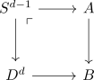
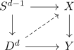
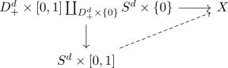
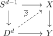
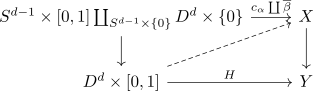

relative cw complex and serre fibration and injection surjection criteria
Proposition
Let $D \subseteq \mathbb{N}$ be a set on natural numbers, $A \hookrightarrow B$ a CW Pair, where $B$ only contains \(d\)-cells for $d \in D$. Suppose $p: X \rightarrow Y$ is a serre fibration, such that
- $\pi_{d-1}(X,x) \rightarrow \pi_{d-1}(Y,p(x))$ is an injection for $d \in D$ and $x \in X$.
- $\pi_{d}(X,x) \rightarrow \pi_d(Y,p(x))$ is a surjection for $d \in D$ and $x \in X$.
Then every lifting problem

has a solution
Proof
using induction along the skeletal filtratino it suffec s to consider tha caes that $B$ arrises from $A$ by attaching \(d\)-cells for $d \in D$.
Hence it sufices to lift.
\begin{displaymath}
\begin{tikzcd}
|[label={[label distance=-2mm]-45:\ulcorner}]| \coprod S^{d-1} \arrow[]{r}{} \arrow[]{d}{}& A \arrow[]{d}{}\\
\corpod D^d \arrow[]{r}{}& B \\
\end{tikzcd}
\end{displaymath}Using the universal property of the pushout, we only need to consider the case

Pick a basepoint $s \in S^{d-1}$.
Then consider $[\alpha] \in \pi_{d-1}(X, \alpha(s))$ Then \begin{align*} p_{*}[\alpha] = [p \alpha] \end{align*} is trivial in $\pi_{d-1}(Y, pa(s))$ by trivial element in a homotopy group and extension.
Thus there exists some $\overline{\alpha}$
By assumption 1) we conclude that $[\alpha] = 0 \in \pi_{d-1}(X, $\alpha(s))$, since the map is injective.
Hence there exists a lift

Since $p \overline{\alpha}_{\vert S^{d-1} = p \alpha = \beta_{\vert S^{d-1}}$ we get a map
represienting an element $[p \overline{\alpha} \coprob \beta] \in \pi_d(Y, p \alpha(s))$
By assumption 2) there exists a premiage
such that $p_{*}[\gamma] = [p \overline{\alpha} \coprod \beta]$
claim:
we can choose $\gamma: S^d \rightarrow X$ such that
Then
are homotopic relative to $s$ since $D_b^d$ deformation retracts onto $s$
Since $D^d_+ \rightarrow S^{d}$ is a cofibration (it is a cw-pair) we get the Homotopy Extension Property

each ponit of the solution is pointed homotopic to $\gamma$ and restrictsto $\overline{\alpha}$ on $D_+^d$.
Set $\overline{\beta} \coloneqq \gamma_{\vert D^d_n}$.
We want to show that
relative to $S^{d-1}$
Regard now $\overline{\beta}$ as a map by $D_{-}^d \simeq D^d$
In particular
Similarly with $\beta$ and $\overline{\alpha}$
Now we obtaina a chain of homotopies
This implies
relative to $S^{d-1}$.
Therefore we get

where the top diagram commutes strictly and the bottom one commutes up to homotopy relative to $S^{d-1}$.
now solve the lifting problem
